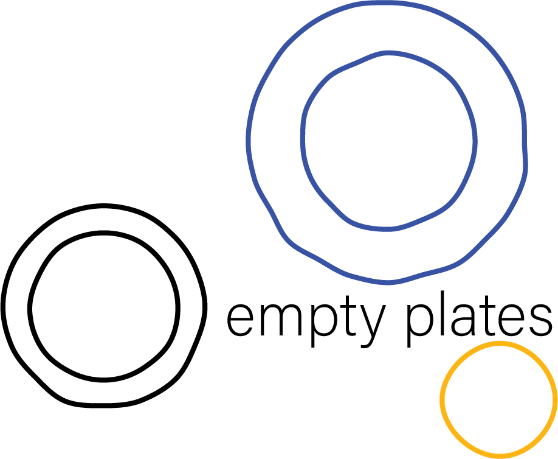

What remains after dinner.
A photographic archive of empty plates — what remains after dinner. Feast and aftermath. Satiation. The silence that follows a good meal. Remnants of shared tables across cities and years: Berlin, Tokyo, Copenhagen, Lisbon, New York, Naples, Hamburg, Nara, and beyond.
Drag to explore